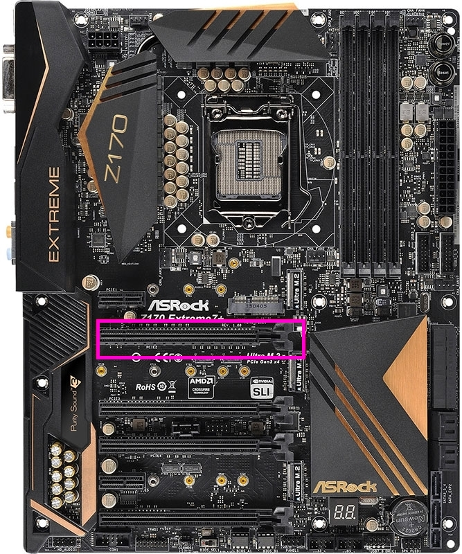
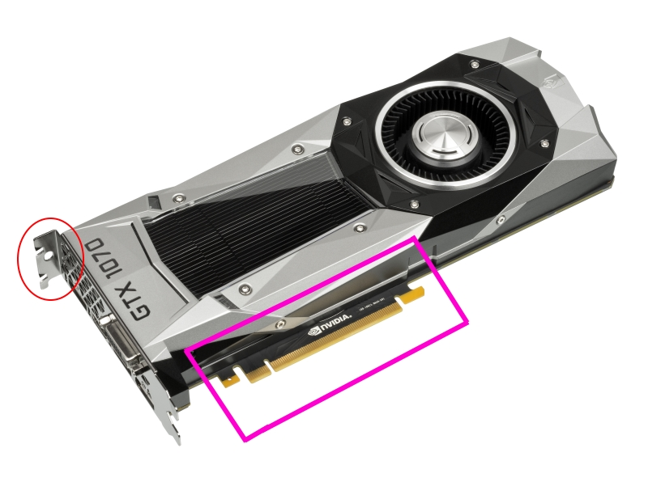

Installing the GPU!
The GPU (graphics processing unit) is the most important part of a gaming PC. This is not required if you aren't gaming, as most major CPU's have a built-in graphics chip.
You will need the screwdriver for this process!
This is almost as easy as the RAM, but not quite.
Click any images on this page to open them in a separate tab/window for better viewing.

Steps:
- Push down on the latch on the motherboard's GPU slot (highlighted in purple/pink in the image to the right). This is the first slot under the CPU, which works similarly to the RAM slot.
- Once you have opened the latch and identified the slot, use a screwdriver to remove the shield(s) that are adjacent to the GPU slot. This will vary between cards, but most higher-end cards will require two of these to be removed. This is highlighted in red in the image at the bottom of the page.
- Now that there is space, take your graphics card and line up the card. You will want to insert the hook on the right side of the card's connector (highlighted in purple/pink to the left) first, then lower the rest of the connector into the slot. As you do this, the latch should close, like with the RAM. You will need to use force, but it will click into place.
- Next, replace the screws from the shields you removed earlier, and screw them into the hole in the card (highlighted in red to the left). This will secure the card so that it doesn't fall out or break due to weight.
- And that's all there is to it! The next step is to plug in the cables, but we will do that last.
It's very important that you do not apply too much pressure to the GPU at any point during this process. You could snap the motherboard or the GPU.
If your GPU is not that big, it may only require one of the shields to be removed. This will vary between cards.
Once you are done, the GPU should be secure and holding its own weight. Test it before trusting it.
We're almost done! On to the hard drives and any CD/DVD drives you may have!